空洞騎士重現 - Cinemachine
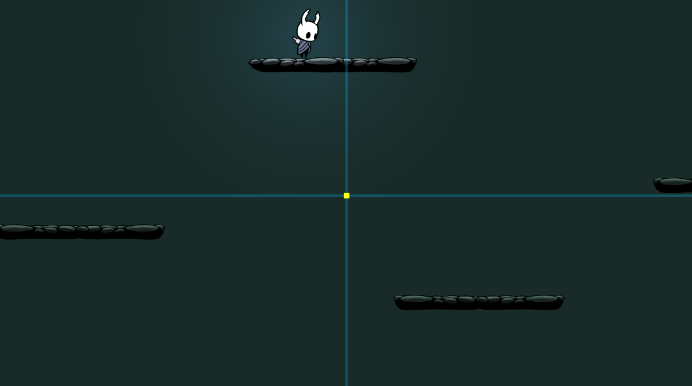
上次優化角色的移動控制，這次來改善鏡頭移動 - 導入 unity 的 cinemachine 來讓鏡頭的移動更穩定，且不會穿過地圖邊界，最後結合多鏡頭的轉換來達成不同效果，例如進入王房後轉成定點鏡頭等等。
Cinemachine
之前我們是透過 script 在每一次 Update 時更新鏡頭的座標位置來達成跟隨小騎士的運鏡效果，為了之後更多樣的運鏡處理，這邊導入 unity 內建的 cinemachine (推薦影片)，在 Hierarchy 視窗新增 cinemachine:
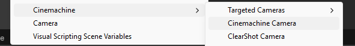
新增後會發現本來的鏡頭自動多了一個齒輪符號，這代表目前 cinemachine 控制的目標是誰 - 有新增 cinemachine brain component，由於我們的鏡頭分成前景背景兩個，為了能同時移動兩個鏡頭，得把 backgroud camera 改成 foreground camera 的子物件:
也可以把 cinemachine brain 改放到 foreground/background camera 的父物件上，但這樣會無法檢視 cinemachine zone (封面圖的座標)
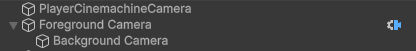
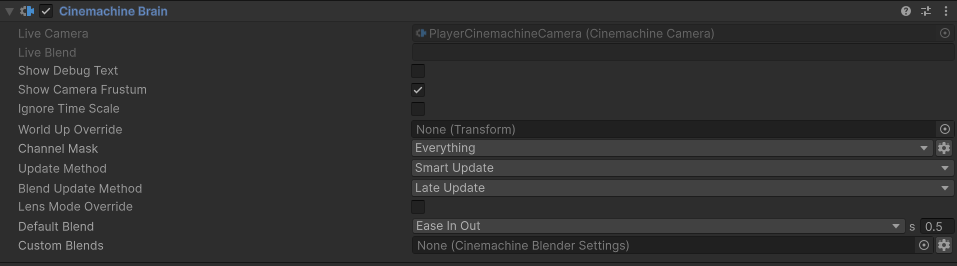
接下來 camera 座標就不重要了，會改由 cinemachine camera 來動態控制:
- Tracking Target - 這是最重要的設定，定義鏡頭要跟著誰跑，最簡單的設定是設成小騎士本身，但為了製造出之前提過的 camera bias - 小騎士面向右邊時鏡頭應該要靠右，反之亦然，所以額外替小騎士新增一個子物件 (CamFollowPos)，然後 x 軸有額外偏移。
- Position Control - 這邊改設為 Position Composer，然後底下會自動新增 Position Composer Component。
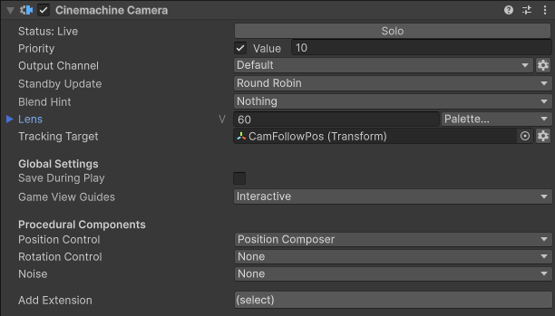
改用 Position composer 後就可以看到底下的座標圖 (要先點選 cinemachine camera 物件)，藍色邊線代表螢幕中心，黃色點則是剛剛設定的 Tracking Target:
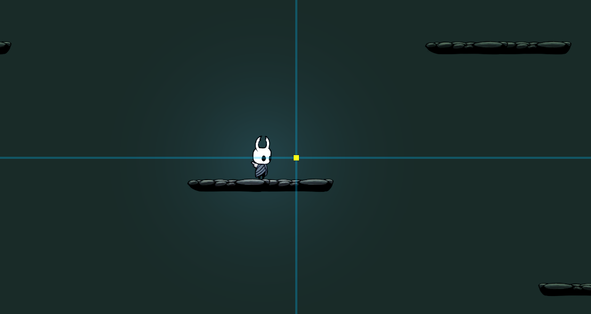
Position composer 有幾個可以設定的參數:
- Camera Distance - 定義 camera 的 z 軸座標，是往後計算，所以實際座標是 -10。
- Dead Zone - 在一定範圍內的移動不會讓鏡頭變動，這可以避免角色快速的左右擺動造成鏡頭亂晃，在此沒有使用。
- Target Offset - 讓 camera 座標與 Tracking Target 有所偏差的設定，雖然同樣可以達成我們想要的 camera bias，但偏差無法隨角色旋轉 (見下面說明) 所以沒有採用。
- Damping - 控制追蹤 Tracking Target 的速度，數值越大則越慢，但也可以避免鏡頭頻繁晃動。
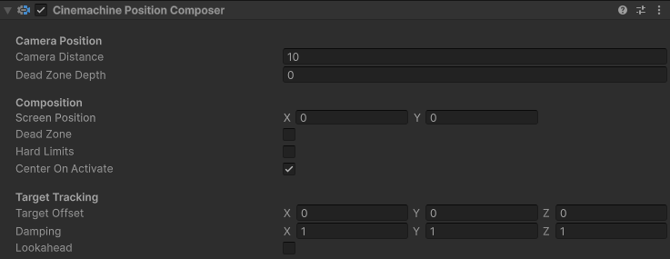
完成以上設定就能夠實現穩定的角色運鏡，並且只要透過 script 控制 Tracking Target 的座標也能達成之前介紹的 look up / look down 的效果，接下來說明為什麼要額外採用子物件 CamFollowPos 而不是用內建的 Target Offset 來達成 camera bias。
Sprite Flip
要達成 sprite flix 有底下兩種常見的方式:
- sprite 的 Flip.x - 最簡單的方法，但有個缺點是無法讓子物件同時轉向，例如移動時腳邊的煙塵特效。
- y 軸旋轉 180 度 - 這樣不僅能讓 sprite 轉向，同時旋轉的效果能直接影響每個子物件，因此將 CamFollowPos 直接設為小騎士的子物件，這樣當小騎士轉向時，鏡頭也會直接轉向，就不用特別寫 script 來修改 x bias 了!!!
Confiner
現在鏡頭會完全跟隨小騎士移動了，但在抵達地圖邊界時就會像下圖一樣穿過地面，可以使用 cinemachine 內建的 confiner component 來避免:
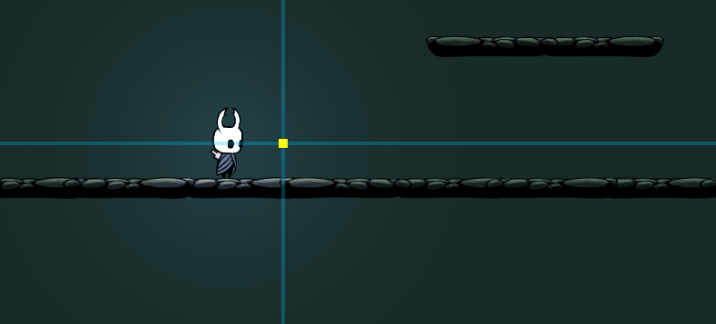
Confiner 需要設定一個 collider 用來定義地圖的邊界，常見有兩種: polygon collider & composite collider:
- polygon collider - polygon 就是能夠拉出任意多邊形的碰撞箱來定義邊界，可以完美的貼合地圖但就是要花點時間拉邊線。
- composite collider - 直接透過多個 box collider 大致把邊界框出來，然後透過 composite collider 將他們合成單一碰撞箱，雖然看起來有點粗糙，但只要地圖設計得宜也很夠用了，我們採用這個方案!!!
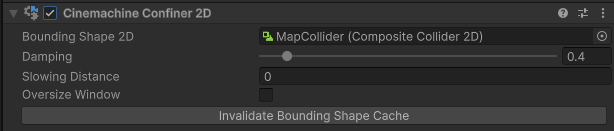
首先新增多個 box collider 將地圖包裹起來，這邊只用了兩個，可以注意到右邊的涵蓋了較大的黑色區塊，理應超出邊界了，這主要是為了讓鏡頭移動更順暢，稍後會解釋 ~~~，另外就是記得把 box collider 的 composite operation 設為 Merge !!
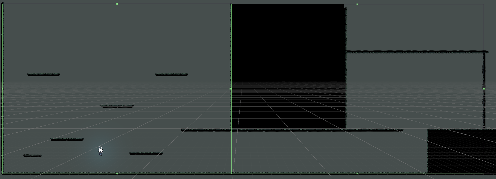
之後替這些 box collider 新增一個 empty parent 然後新增 composite collider，設定如下 Geometry Type = Polygons，unity 會自己新增一個 rigidbody 2D，不過我們不需要地圖移動，所以把 body type 改成 static。
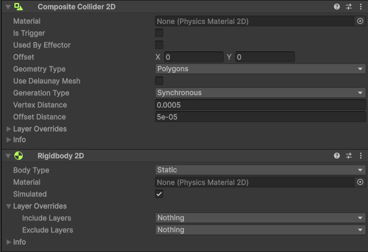
接者就是把剛剛新增的有 composite collider 物件 (MapCollider) 放給 confiner，就能夠得到下圖這種鏡頭被邊界卡住的效果，可以看到鏡頭中央明顯高於黃色的追蹤點，因為鏡頭無法超出剛剛設定的 collider。
實際邊界應該要比地板再下面，包含部分前景會看起來比較自然點，但我沒有弄前景XD
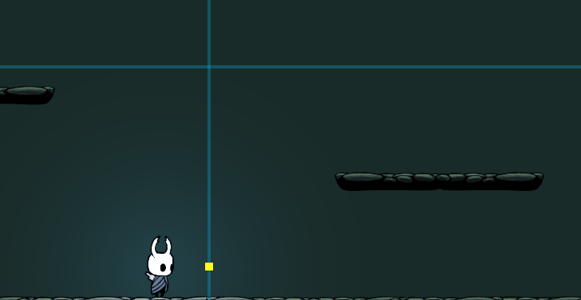
地圖邊界設計
說明一下前面為什麼要把右邊 box collider 拉的比實際邊界大，主要是因為當 collider 的範圍比鏡頭還要小的話，例如底下那個通道，會導致鏡頭無法穿過 collider，就會變成角色在移動但鏡頭卻卡住的情況:
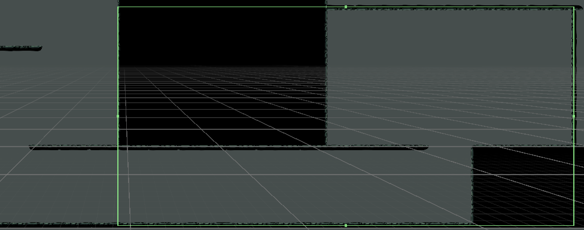
這種可以透過 confiner 的 Oversize Window 來解決，讓 confiner 來自行計算鏡頭可以怎樣通過窄小的空間，這個蠻消耗效能所以要謹慎使用。
但只要地圖設計好也能解決鏡頭卡住的問題，先把 collider 拉大讓鏡頭可以通過，然後畫面上方多出來的部分就透過前景設定讓畫面不突兀，另外在小通道，我們不希望角色跳躍會導致鏡頭晃動，所以要確保鏡頭中心是高於通道天花板，或是追蹤點最高不會超過鏡頭中心 (下圖)。
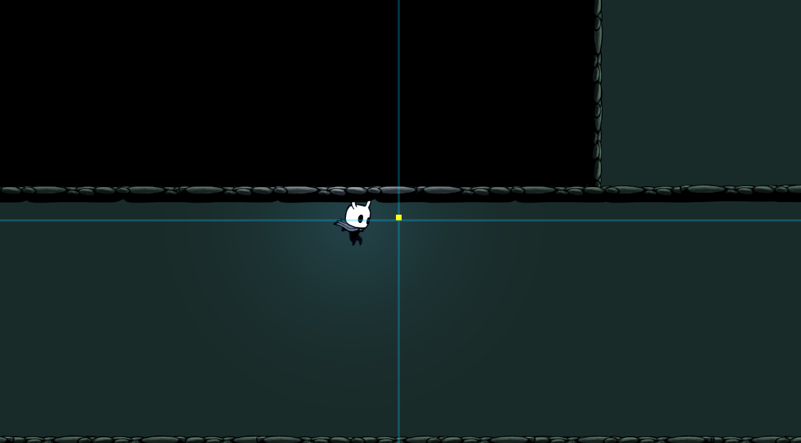
Boss Room Camera
遊戲中不是每次鏡頭都跟著玩家移動，像是進入 boss 房時，鏡頭往往是定住的，讓玩家能夠專注在閃躲 boss 攻擊，我們可以透過多個 cinemachine camera 間的切換達成:
- 新增 cinemachine camera - 這次不需要額外的 component，只要調整座標讓他對準 boss 房即可，由於一次只能有一個 cinemachine camera 控制鏡頭，為了方便觀察，可以點選 cinemachine camera 的 Solo 模式，會直接切換到此 cinemachine camera。
- 新增 box collider - 新增空物件然後加上 box collider，用於辨識玩家已經進入 boss 房，將 collider 大小控制成跟房間一樣大，然後點選 trigger 模式。
- 新增腳本 - 替 boss 房物件加上腳本，這邊腳本的作用是在玩家進入房內後修改 cinemachine camera 的優先權，讓他高於原先的 cinemachine camera，離開房間再改回去，以此達成切換鏡頭:
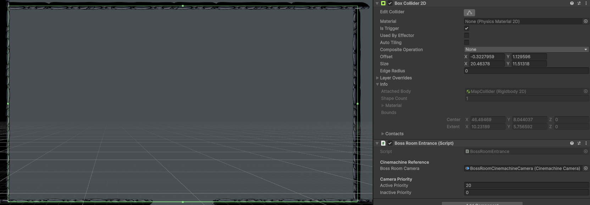
public class BossRoomEntrance : MonoBehaviour
{
[Header("Cinemachine Reference")]
[SerializeField] private CinemachineCamera bossRoomCamera;
[Header("Camera Priority")]
[SerializeField] private int activePriority = 20;
[SerializeField] private int inactivePriority = 0;
private void OnTriggerEnter2D(Collider2D other)
{
if (other.CompareTag("Player"))
{
bossRoomCamera.Priority = activePriority;
}
}
private void OnTriggerExit2D(Collider2D other)
{
if (other.CompareTag("Player"))
{
bossRoomCamera.Priority = inactivePriority;
}
}
}
成品
可以看到 cinemachine 成功的把鏡頭控制在場景內，並且隨著追蹤點改變跟著移動，在通道裡也不會卡頓或是晃動，最終到 boss 房內也成功讓鏡頭定點，離開房間後也繼續追蹤小騎士，至於 boss 房內 cinemachine 的座標消失是因為 boss 房的 cinemachine camera 並沒有使用 position composer。
總結
本次透過 cinemachine 小小優化了運鏡並測試了多鏡頭的操作，光這樣其實已經足夠處理平台跳躍遊戲內大部分的鏡頭了，接下來就繼續回去把小騎士的移動完成，加上衝刺與爬牆。